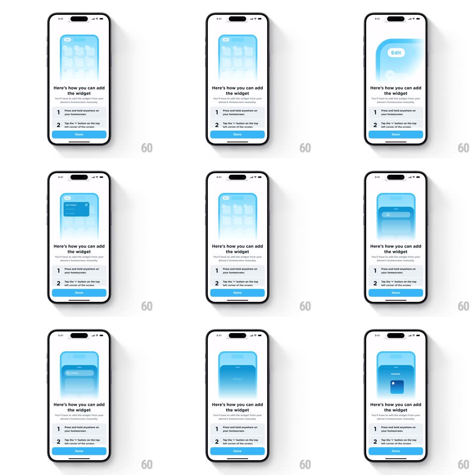

Media
Frame-by-frame

Rebuild this interaction 1:1: Airlearn's "how to add the widget" tutorial card - a looping step-by-step illustration inside a light blue rounded panel showing an iOS home screen going into edit mode, opening the widget gallery, and placing the Airlearn widget, while the static instruction list sits below.

Rebuild this interaction 1:1: Airlearn's "how to add the widget" tutorial card - a looping step-by-step illustration inside a light blue rounded panel showing an iOS home screen going into edit mode, opening the widget gallery, and placing the Airlearn widget, while the static instruction list sits below.
## Integration
Integration: stack-agnostic spec - springs given as stiffness/damping, timed motions as duration + curve; map every value to your framework and animation library of choice.
## Scene
Mobile screen, white background. Top: rounded-rect illustration panel (light blue fill, ~16px radius) containing a miniature home screen. Below: bold title "Here's how you can add the widget", a gray subtitle line, two numbered steps ("Press and hold anywhere on your homescreen.", "Tap the + button on the top left corner of the screen."), and a full-width blue "Done" button pinned at the bottom.
## Motion spec
Pattern: looping instructional sequence inside a fixed illustration window.
- The mini home screen fades from empty blue to a grid of app icons (400ms crossfade).
- An "Edit" pill appears top-left of the mini screen (fade + scale 0.9 -> 1, 250ms); icons enter jiggle mode (each icon rotates +/-1.5deg, ~120ms cycle, phase offset per icon).
- A dark widget card (Airlearn widget preview) slides down from the top of the panel into the mini home screen (translateY -40px -> 0, 350ms, ease-out).
- The widget settles into the icon grid; jiggle stops; the panel crossfades back to the empty state and the loop restarts (total loop ~4s, 600ms hold between passes).
## Calibration
- The jiggle is the only continuous motion - keep amplitude tiny (<=1.5deg) so it reads as iOS edit mode, not shaking.
- Panel content crossfades; the text and Done button below never move.
## Reduced motion
Static three-step illustration (home screen -> edit mode -> widget placed), no loop, no jiggle.
## Don't miss
- The illustration replays in a loop; the numbered steps below it are static text, not animated steps.
- The mini home screen's "Edit" control is a small pill, not the full iOS edit bar.